主标题
品牌造梦 增长营
Subtitle
26年如何实现 · 人群驱动 · 确定性增长
导语
- 上午定战略判断与增长方向，下午用造梦体系把内容落地。
- 从切准一个人群，到做出一个爆款，再到复制成一条增长曲线。
品牌造梦 增长营
26年如何实现 · 人群驱动 · 确定性增长
| Time Slot | Theme | Summary |
|---|---|---|
DAY 1 · 上午 | 战略判断 × 增长方向 | 定增量 · 定流量场 · 定成交 · 定验证线 |
DAY 1 · 下午 | 造梦方法论落地 | 人群切片 · 拆梦建梦嵌梦 · AI带动 |
DAY 1 · 晚间 | 实战工作坊 | 切片对齐 · 内容翻译 · 高点击×高转化 |
DAY 2 | 达人合作 | 信任锚点 · 三阶段矩阵 · 标准化Brief |
DAY 2 | 关键词霸屏 × KOS | 发现页造势 · 搜索页兑现 · KOS控盘 |
DAY 2 | AI时代团队建设 | 判断力外化 · 人定方向 · AI放大产能 |
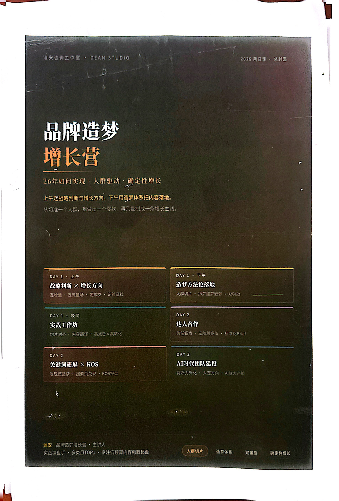
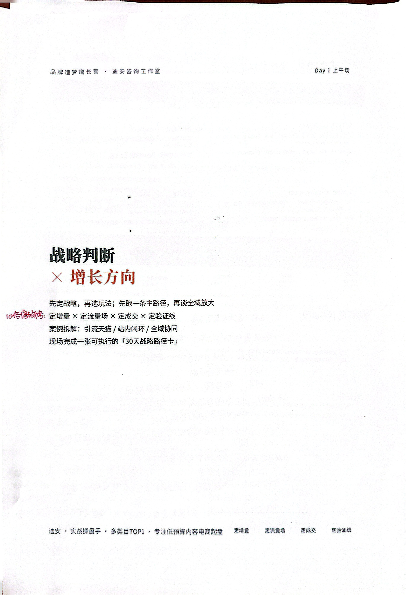
| Name | Question | Details | Output |
|---|---|---|---|
定增量 | 增长从哪里来？ |
| 输出：未来30天的增量一句话 |
定流量场 | 用户从哪里进入？ |
| 输出：搜索__% | 发现__% |
定成交 | 用户在哪里下单最顺？ |
| 输出：唯一主成交场 |
定验证线 | 现在证明到哪一层？ |
| 输出：证据层级 + 下一步 |
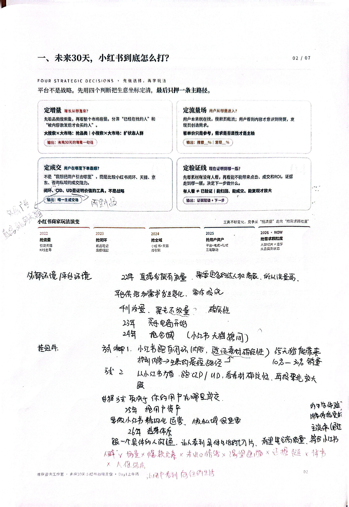
目前还有90%以上企业在用KFS（KOL+Feeds+Search），适合国际大牌、放任ROI品牌、传统快消/大厂（华熙生物、上美、宝洁系、联合利华系）。但问题很明显：达人费用高、链路长、ROI不确定。
核心思路：把复杂的达人沟通和内容创意，简化成一个工业化的素材生产和投放流程。不养KOL，只投资“确定性”。
公司不养KOL，只投资“确定性”。把钱从不可控的达人身上，转移到可量化的素材和投流上，这才是生意。——EHD和losoki的共性。
靠人群切片、场景和理想状态激发需求。适合“看到内容才意识到需要”的产品；负责扩大需求池，不等同于低客单。EHD/losoki的重要增量场。
用户主动搜索品类、问题或对比方案，意图更明确。适合已有显性需求、需要比较决策的品类；鲜朗从“猫粮”搜索截流到天猫成交就是典型路径。
1. 品类显性需求足够——通过品类细分词弯道超车，避开红海词，布局问题词、对比词和长尾词。2. 用户需要反复比较——高客单只是常见特征，不是唯一条件。实现方式：蓝V矩阵、KOS账号、产品直拍、内部运营号批量发内容，先用自然搜索验证，再决定是否投放聚光。
蓝海机会提示：“送礼”是一个非常好的蓝海市场，探索新的内容模版时可以优先考虑。
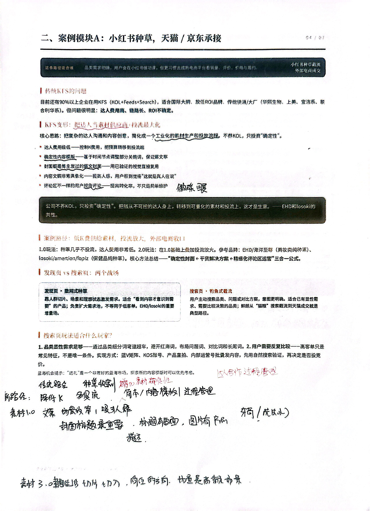
| Index | Name | Tag | Question | 核心要点 | Required Output |
|---|---|---|---|---|---|
01 | 定增量 | DEMAND | 未来30天，增长来自抢品类，还是扩需求池？ |
| 必须写下：未来30天，增量来自____ |
02 | 定流量场 | ENTRY | 用户是主动找答案，还是看到内容才意识到需要？ |
| 必须写下：主战场____搜索__% | 发现__% |
03 | 定成交 | DESTINATION | 种草以后，用户到哪里成交阻力最小？ |
| 必须写下：未来30天，只押主成交场____ |
04 | 定验证线 | PROOF | 这条素材，现在证明到哪一层？ |
| 必须写下：当前证据层级____ 下一步补____证据 |
| Week | Focus | Detail |
|---|---|---|
WEEK 1 | 定盘 | 根据供需与市场，确定增量、主战场和成交终点 |
WEEK 2 | 对照测试 | 搜索/发现两组内容，同一产品、同一成交终点 |
WEEK 3 | 复现确定性 | 胜出模型衍生3-6版，盯进店、加购与支付 |
WEEK 4 | 放大或止损 | 能复现才加预算；不能复现，回到第一周重新判断 |
玩法服从路径，投放服务验证：闭环 / CID / UD 都是归因与验证工具，不是战略本身
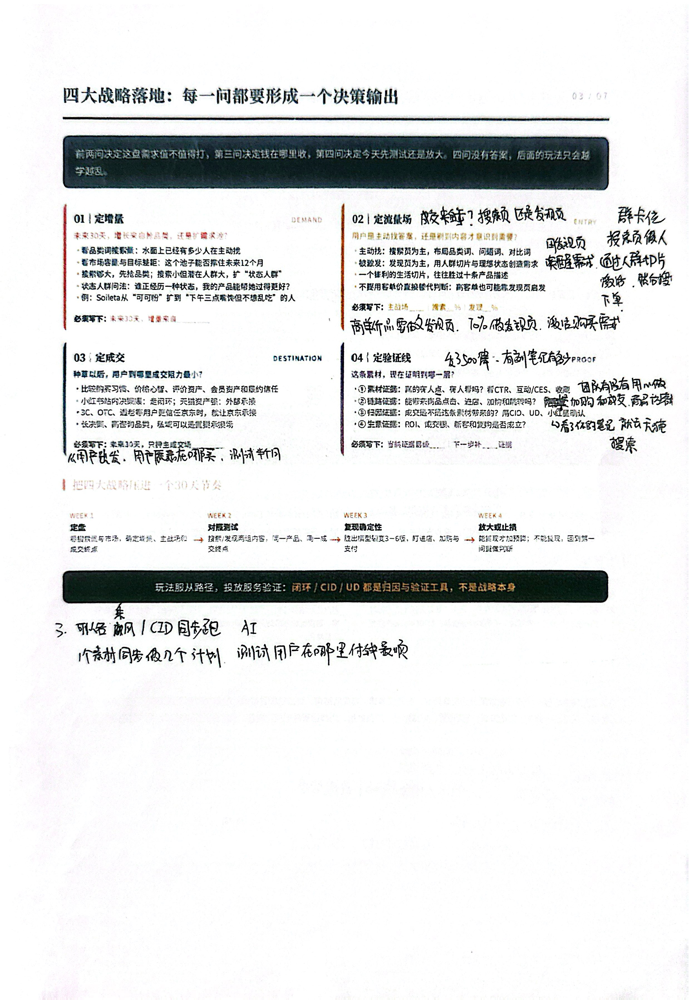
90%以上企业几乎不关注评论区，只做简单维护。评论区是提高商品转化率最重要的一环之一，贯穿所有投放模式。三个层级玩法：
| Level | Headline | Details |
|---|---|---|
1.0 基础玩法 | 强化痛点+增加信任+引导购买 | 症状+成分+求链接；痛点共鸣+购买引导；已购反馈（带小缺点更真实） |
2.0 高阶玩法 | 拉CES+借势大流量品类词 | 增加笔记精准流量；横向借势大流量词；不同身份视角交叉评论（如医学生背书） |
3.0 进阶玩法 | 评论区即内容场 | 借势热点品牌/明星；蹲品类大词拉精准流量；隔周补真实反馈+图片 |
全域不是所有商家的起盘动作。只有市场空间足够、至少一条成交路径已经跑通、并且拥有可复制素材与稳定承接团队时，才进入主理人IP、KOS、蒲公英、投流、直播与私域协同。高客单也不是一种渠道，而是更长的决策链，需要更多信任与多触点证明。
全域协同的进入条件 = 市场值得打 + 一条主路径已跑通 + 素材可复制 + 承接团队稳定
| Brand | Route | Details | Core Takeaway |
|---|---|---|---|
EHD / 海洋至尊 | 发现造需 · 天猫承接 · 低K费供给 | 增量靠效果场景；发现页启发、搜索与评论区证明；天猫用销量评价收口；胜出封面与解决方案内容再投流。 | 核心学：把达人当素材供应商，而不是不可控流量 |
losoki / amertion | ROI 3起步 · 外部电商成交 | 用确定性封面、干货解决方案与不同用户视角评论，把素材标准化；是否加预算，看进店、加购与支付是否同步提升。 | 核心学：低K费测试，生意指标通过后再放大 |
米度狗 MDOG | 已售33.7万+ · 小红书闭环 | 内容直接触发短决策需求，商品笔记完成种草与支付；找到5-6个确定性种子素材后持续裂变。 | 核心学：不追每日新创意，先复现支付模型 |
浴见 | 月销500万+ · 笔记×直播闭环 | 100元浴刷先验证，再用氛围内容、主理人直播和套装把客单拉到600+，展示路径如何随确定性升级。 | 核心学：先验证单品，再升级货盘与信任链 |
郑州帮弊端：平台在打击，本质是低质量内容批量化。我们要学的是他们的工业化思维和搜索页卡位逻辑，不要学的是素材质量底线和违规操作。野路子玩法（搬运抖音素材+疯狂切片混剪）能白嫖短期GMV，但不可持续。
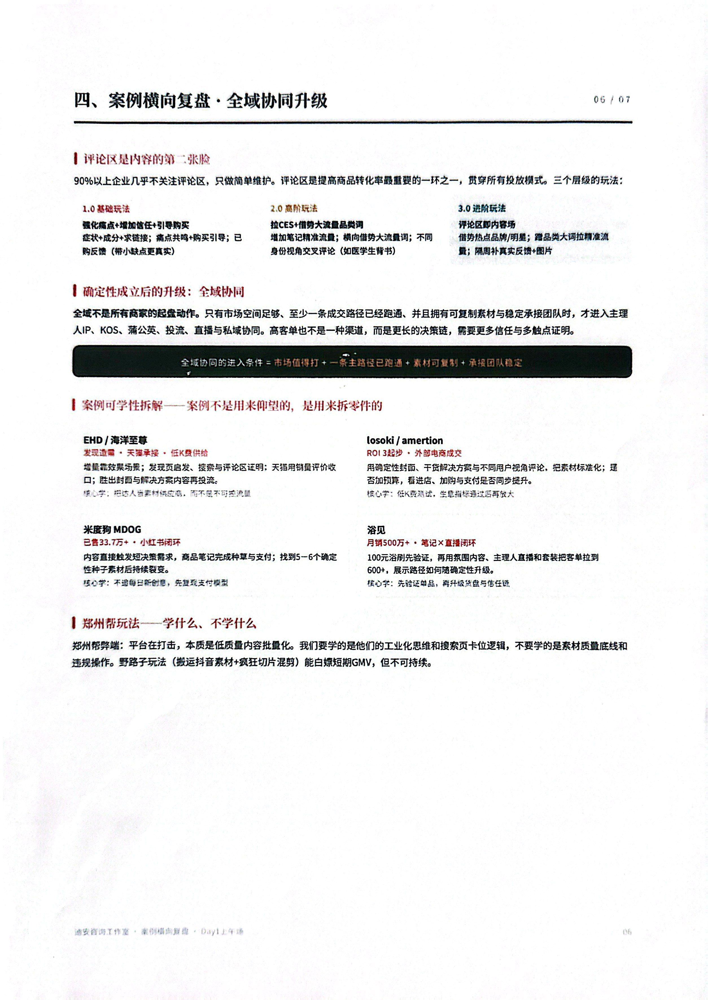
5-6个确定性种子素材不断裂变。用确定性模版批量生产高转化笔记，比盲目创新更高效。适合低客单、低决策门槛品类。案例：米度狗已售33.7万+、钱与书（图书）、爱拖地的pingu。
02
笔记种草（社区流量）+直播间（电商流量）收割。三种组合：笔记+店播、笔记+达播、笔记+店播+达播。月销500w+的商家可把小红书当种割一体平台。案例：浴见月销500w+、阿芙月带货200-300w+。
03
商品笔记+社区笔记+店播+达播的完整闭环。案例：意卡莉1个月闭环800-1000w，ROI远超其他保健品。商品笔记热度提高，达播丝滑度提升500%。
产品可视化 + 效果可视化 + 决策门槛相对低 + 站内价格与信任资产有竞争力。商品笔记是基石，直播间是加速器——短决策靠笔记直接卖，长决策靠笔记蓄水、直播或咨询完成信任。商品笔记做好了，还能撬动达人自来水种草和买手直播。
品类场观天花板 ≥ 3000；客单价 ≥ 100元（毛利率30%+）；团队有稳定主播+运营；已有确定性笔记持续蓄水；月利润能覆盖3万+人力成本
品类场观天花板 < 1500；客单价低+毛利率低（双低）；没有稳定主播（兼职/频繁换人）；还没跑通确定性笔记素材；月营销预算 < 3万
| Step | Action | Tactic |
|---|---|---|
Step 1 低客单撬动 | 100元浴刷撬动 | 商品笔记+达播 |
Step 2 种割一体 | 主理人直播+笔记带货 | 一边种草一边卖货 |
Step 3 拉高客单 | 主推夏日抛光四件套 | 客单价拉到600+ |
浴见的核心问题：如何实现既卖货又具备品牌内容保留？关键在于光影感/音效/画面质感制造的疗愈感——没有这些氛围感，同样的产品卖不到50w+。
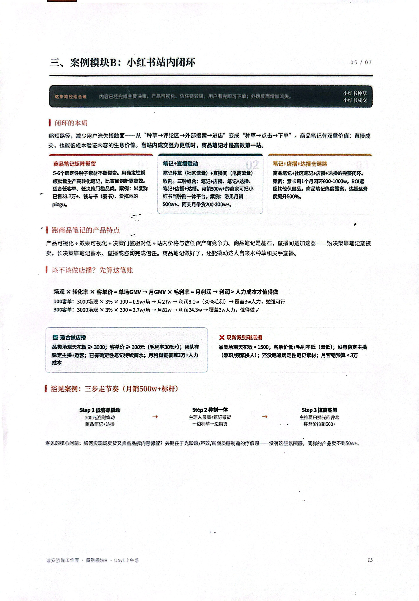
造梦方法论
内容落地「造梦体系」
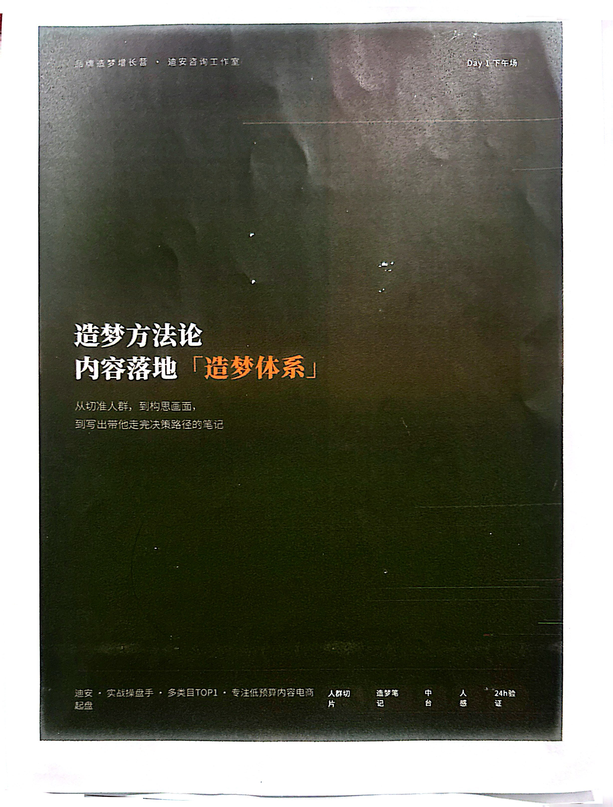
这不是四个互斥象限，而是一条连续决策链：先定需求，再定流量；再定成交，最后定节奏。
| Card Id | Title | Options |
|---|---|---|
01 | 定增量：我靠什么增长？ |
|
02 | 定流量场：用户从哪里被触发？ |
|
03 | 定成交：在哪里下单阻力最小？ |
|
04 | 定验证线：证据走到哪一层？ |
|
现场填写 · 未来30天不再同时开三条路径
增长来自
____________________
主流量场
____________________
主成交场
____________________
当前证据
素材 / 链路 / 归因 / 生意
____________________
小成本证明一条，再决定加码还是止损
| Time | Step | Items |
|---|---|---|
DAY 1-3 | 定盘 |
|
DAY 4-10 | 测试 |
|
DAY 11-20 | 复现 |
|
DAY 21-30 | 放大/停止 |
|
有人看只是第一层，走到生意证据才决定是否放大
| Step Num | Name | Indicators | Channels |
|---|---|---|---|
① | 素材证据 | CTR · 互动/CES · 收藏 | 曝光 / 平台数据 |
② | 链路证据 | 商品点击 · 进店 · 加购 · 跳转 | 站内商城 / 种草直达 |
③ | 归因证据 | 归因成交 · 新客 · 外溢 | CID / UD / 小红星 |
④ | 生意证据 | ROI · 成交额 · 复购 | 结算 / 生意后台 |
高ROI不是押对一个平台，而是选对需求、走对路径、放大确定性。
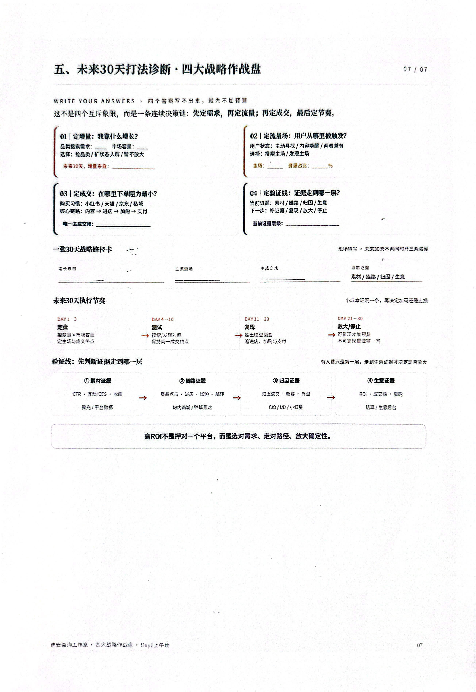
| Index | Name | Description |
|---|---|---|
01 | 人群切片 | 你的目标人群是谁？切准什么样的人群。先切对人，后面才成立。 |
02 | 内容呈现 | 画面怎么构思与编写。梦不是广告词，是一个可看见、可感受的画面。 |
03 | 笔记输出与体系 | 笔记类型、什么是造梦笔记、文案怎么落地、怎么判断一篇笔记好坏。 |
04 | 中台搭建与用户决策路径 | 中台怎么搭、为什么需要决策路径、怎么用路径写出“人感”笔记。 |
05 | 核心问题解决 | 同质化怎么破，24小时验证怎么做。 |
造梦方法论只有一句话——先替用户造一个“他想成为”的画面，再让每一篇笔记都带他走完这段决策路径。整个下午，就是把这套方法装进你能带走的五个模块。
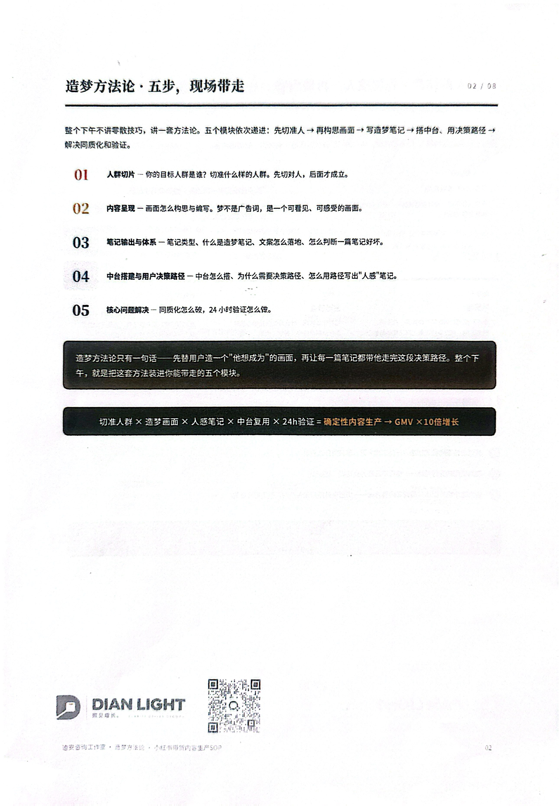
✕
人群标签
“25-35岁 精致妈妈”
只有人口属性，没有生活状态——不知道她此刻在操心什么，写不出针对性的内容。
✓
人群切片
“孩子住校回来一顶油头，怕他被同学看低”
有具体的人、具体的时间、具体的事——知道替谁说话、写什么画面、配什么关键词。
丨切准的三坐标
| Name | Title | Content |
|---|---|---|
坐标一 | 决策者 | 谁买？谁用？谁影响？妈妈买、孩子用、同桌影响。找准决策链条上真正掏钱和说话的人。 |
坐标二 | 生活节点 | 他在什么时间、什么场景开始操心这件事？军训、住校、开学、换季、考试周……节点越具体，画面越真。 |
坐标三 | 决策阶段 | 是刚有感觉、正在找方案、还是在比价下单？不同阶段，笔记要承接的动作不一样。 |
命名规则：谁 + 什么时间 + 在为什么事操心。切好之后，每个切片都有一个能脱口而出的名字，团队照着名字就能写内容。
丨切准的判断标准
品类是水塘，人群是大海。搜索量看存量，人群切片找增量——只有切到“人”，才做得了增量。
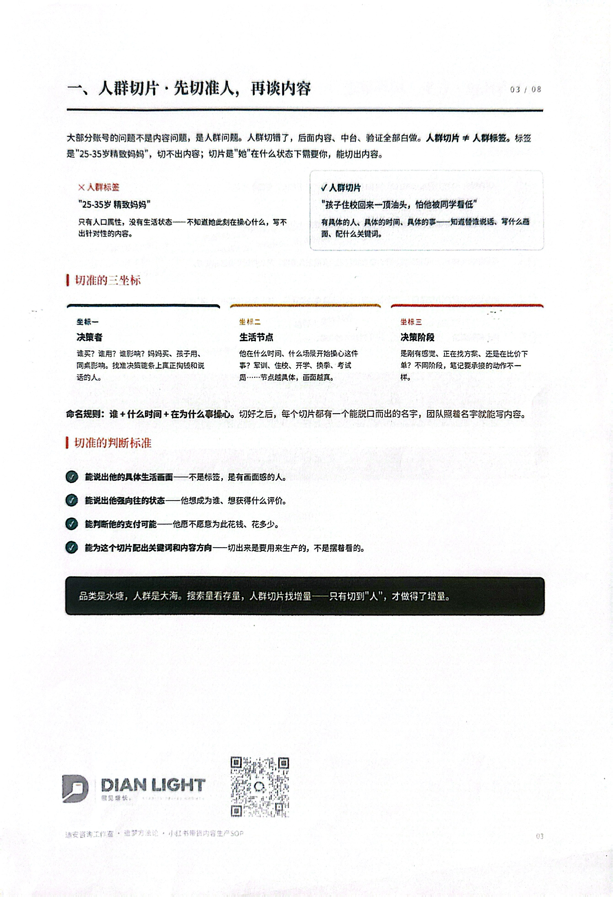
丨画面构思三步
| Name | Description |
|---|---|
拆梦 | 她现在是什么状态？真正想成为谁？表层痛点 → 中层需求 → 底层渴望。例：她想要孩子头发不油，渴望的是“孩子被同学喜欢”。 |
建梦 | 把理想状态写成可看见、可感受的画面——看到什么、听到什么、身体什么感受、情绪是什么。 |
嵌梦 | 产品自然出现在画面里，成为抵达梦想的工具，不是硬塞进来的广告位。 |
| Num | Title | Detail |
|---|---|---|
01 | 谁 + 什么时间 | 孩子放学走在你前面，头发蓬松地晃，不再压着帽子躲同学。 |
02 | 动作 + 身体感受 | 他低头写作业，刘海不再糊在脑门上；你伸手摸他头发，是干爽的。 |
03 | 情绪 + 别人评价 | 同桌的妈妈问你“给他用了什么”；你不再天天催，他自己记得洗。 |
04 | 判断标准 | 用户会不会觉得“这说的是我”？画面有没有代入感？产品有没有自然融入而非硬塞？ |
丨卖点翻译成画面
| Feature | Scene |
|---|---|
“氨基酸温和” | 孩子愿意每天用，不再一洗就哭 |
“控油蓬松” | 他低头写作业，刘海不再糊在脑门上 |
“持久留香” | 打开洗衣机，有属于他的味道 |
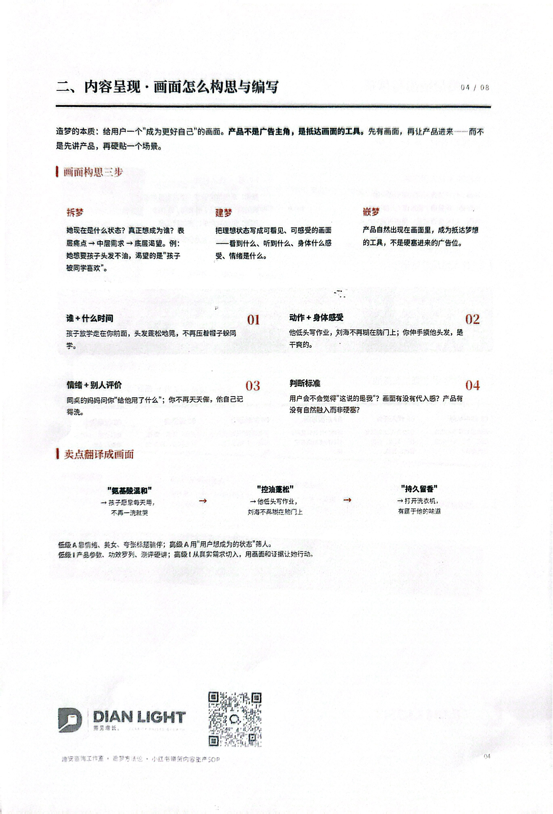
丨1·笔记类型：A停 · I动
打开流量入口，吸引泛人群
场景词 / 情绪词 / 人群标签
CTR是否过线，是否筛到对的人
承接明确需求，提高商品点击
品类词 / 需求词 / 痛点词
商品点击率、支付转化率
丨2·什么是造梦笔记
造梦笔记 = 带用户走完“从现状到梦想”的笔记。让他在笔记里看到“更好的自己”，产品自然成为抵达的工具。
种草不是为了被看见，是为了被买单。痛点内容能卖货，但不建立溢价；造梦笔记卖“想成为的状态”，建立溢价和复购。
丨3·造梦笔记文案怎么落地
| Num | Name | Detail |
|---|---|---|
01 | 命中标题 | 把他没说清的问题说出来。例：为什么他总低着头？ |
02 | 代入开头 | 让他确认“这说的是我”：场景、经历、症状、反差。 |
03 | 原因诊断 | 解释为什么会这样，给听得懂的底层逻辑。 |
04 | 梦想画面 | 不是先卖产品，是先给他一个向往的画面。 |
05 | 证据链 | 对比、数据、背书、评论截图，解决“信不信”。 |
06 | 行动指令 | 商品组件、评论区、收藏和私信，让心动变动作。 |
丨4·怎么判断一篇笔记（经营判断）
| Metric | Question | Benchmark |
|---|---|---|
CTR | 停不停 | 行业 benchmark 5-10% |
商品点击率 | 准不准 | 商品组件 5-10%起 |
支付转化率 | 信不信 | 5-10%起 |
>0.5% | 点击 × 转化 | 大于 0.5% 才值得放大 |
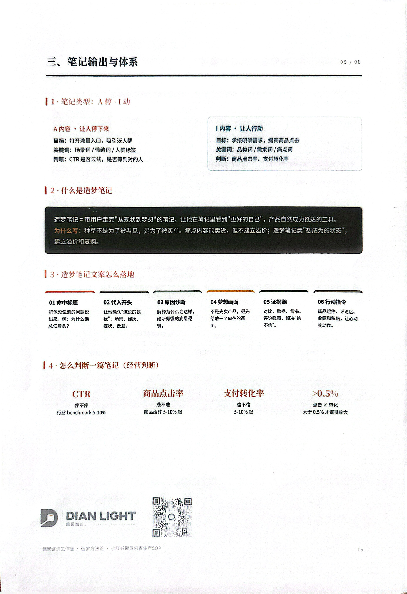
丨1·中台怎么搭（三层弹药库）
| Layer | Name | Description | Tags |
|---|---|---|---|
LAYER 1 | 关键词池 | 从关键词出发找方向。来源：搜索页 / 聚光 · 乘风 / 竞品账号 / 评论区 · 问大家 / 跨类目。 |
|
LAYER 2 | 素材库 | 把已验证笔记拆成可复用模板：标题、封面、正文结构、数据、评论区统一入库。生产 = 从库里挑模板，不猜。 |
|
LAYER 3 | 评论区资产 | 评论区 = 承接流量 + 二次转化 + 建立人设。高频问题、用户原话、QA 库沉淀下来，直接反哺选题和正文。 |
|
丨2·为什么需要用户决策路径
丨3·怎样写出“人感”笔记（代入感落到每个模块）
| Position | Goal | Detail |
|---|---|---|
封面标题 | 命中他在想的 | 把他没说出口的问题说出来，他才会停下来。 |
开头 | 确认“这说的是我” | 用场景、经历、反差让他点头，不是自说自话。 |
正文 | 顺他的思路走 | 原因 → 方案 → 证据，模拟他的判断过程，不打断。 |
结尾 | 给他一个动作 | 评论区、收藏、私信，把心动变成动作，不悬空。 |
人感 = 模拟用户的代入感，落实到每一个模块。人感不是文笔，是你把自己放进他的决策路径里，每一步都写到他心里。
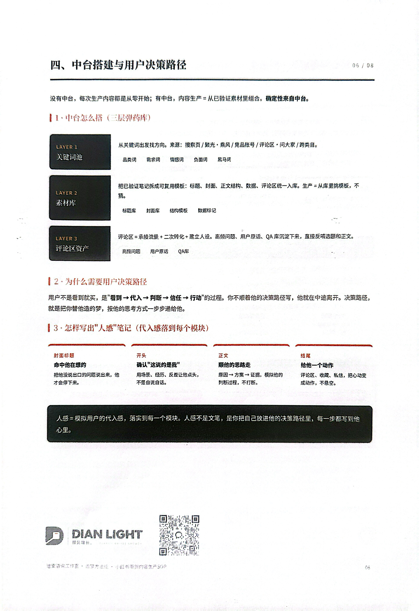
丨1·同质化怎么破
和同行一样的笔记，算法不再给增量曝光；和同赛道一样的内容，用户已经看腻。同质化的根因不是素材少，是所有人都在同一个层级找答案。解法不是继续看同行，是向上找需求、向外找形式、向远处找风格。
| Name | Description |
|---|---|
品类内卷 | 产品摆拍、功效词罗列。99%商家卡在这里。ROI 1:1~1:2。 |
向上找需求 | 从品类词跳到场景词/痛点词/情感词，内容变成“解决方案”。ROI 1:2~1:3+。 |
同痛点跨类目 | 同一个痛点，去护肤、养生、家居、母婴找不同表达。ROI 1:3~1:5。 |
跨行业风格 | 借电影、杂志、故事结构，建立难复制的表达。ROI 1:5~1:10，仅 <5% 商家能做到。 |
情感需求 + 跨界形式 + 跨界美学 + 黑马词 = 内容破局
丨2·24小时验证：不猜，测
| Step | Action | Details |
|---|---|---|
STEP 1 | 3-5个模板 |
|
STEP 2 | 企业号投放 |
|
STEP 3 | 24h看数据 |
|
STEP 4 | 决定放大 |
|
| Type | Action |
|---|---|
高点击 高转化 | 复制放大——补量，给达人，继续投。 |
低点击 高转化 | 优化封面标题——人群对，钩子弱。 |
高点击 低转化 | 检查人群精准度——停下来的人不是要买的人。 |
低点击 低转化 | 暂停换方向——别恋战，换切片换模板。 |
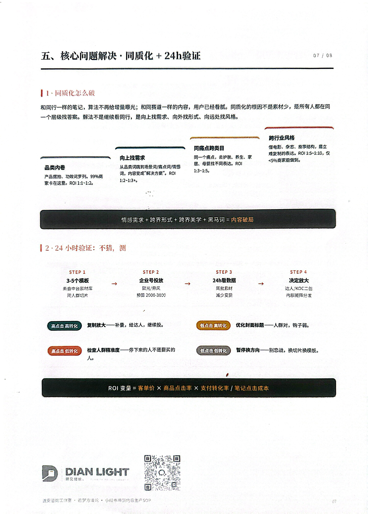
一个品牌 · 一条完整链路
01
别停在“25-35 岁职场女性”。走到“加班到晚上十点回家，仍希望生活不是一团糟的人”。
产出：1 主切片 + 2 备选
02
产出：能落地的封面 + 标题 + 正文思路
03
内容关（用户想不想）：画面感——封面一眼有没有人群感+场景感+情绪/欲望+信息差，她会不会想“这说的不是我？”
数字关（你赚不赚）：ROI 达预期回报线 + 能持续放量（可复制成 10 条 100 条，不是孤品爆款）
04
产出：1 篇可发布笔记 · 小组互评 + 组长验收
组长带组推进 · 小组互评把关 · 团队盯进度 · 疑难升级到助教与迪安
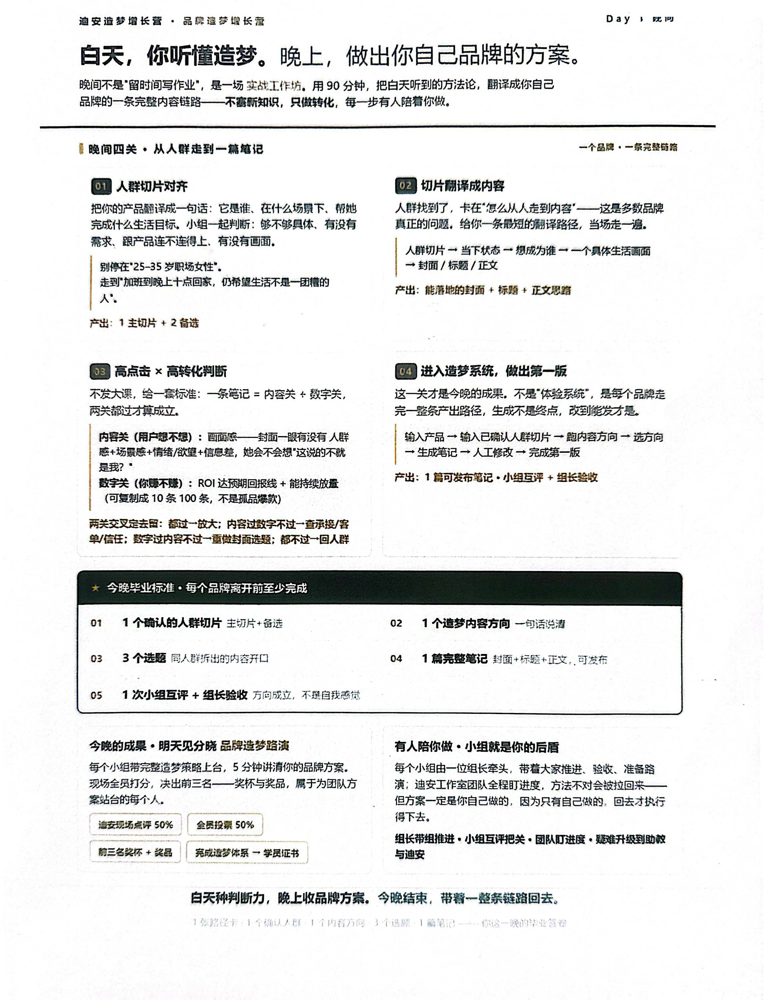
| Badge | Title | Detail |
|---|---|---|
今天 | 切人群 | 把现有笔记按人群切片重新分类——你每一篇笔记，到底在替谁说话？用三坐标 + 四标准定下 1-2 个优先切片。 |
本周 | 写造梦笔记 | 为优先切片写 3 篇造梦笔记：命中标题 → 代入开头 → 原因诊断 → 梦想画面 → 证据链 → 行动指令。 |
本周 | 搭中台第一层 | 关键词池（每类 5-10 词）+ 素材库 3 个已验证模板。以后生产 = 从库里组合，不猜。 |
48h | 24 小时验证 | 3-5 个模板投放测试，预算 2000-3000，24 小时看四指标，筛出值得放大的那个。 |
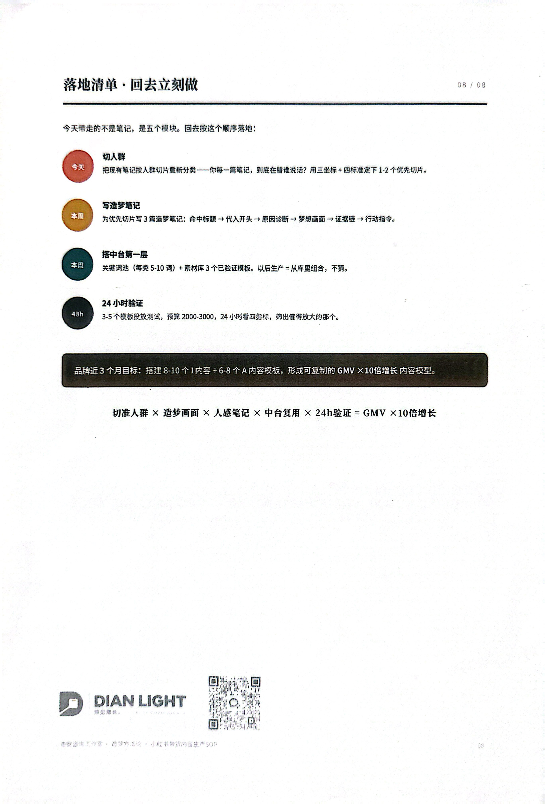
达人合作
品牌价值
最大化拆解
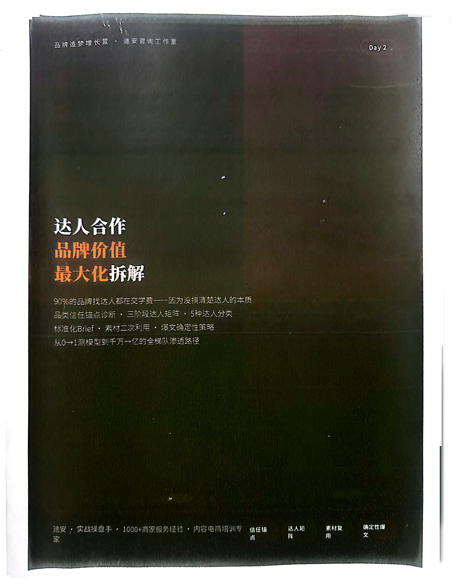
好的内容是设计出来的，不是赌出来的。好的达人带货是运营出来的，不是买出来的。不要把达人当成一次性广告牌，要把达人当成流动的“素材生产线”和“品牌背书机”。
| Trust Type | Industry | Trust Anchor | Recommended Influencer |
|---|---|---|---|
成分/功效信任 | 护肤、保健品、母婴 | 专家背书 + 成分解析 | 皮肤科医生 / 成分党博主 |
审美/风格信任 | 服饰、家居、美妆 | 博主穿搭 / 场景展示 | 有审美IP的内容型达人 |
效果/体验信任 | 个护、食品、小家电 | 真实使用前后对比 | 素材供应商 + KOC铺量 |
权威/安全信任 | 高客单、医疗、教育 | 明星 / 权威IP背书 | 头部IP/明星 + KOC承接 |
| Model | Content |
|---|---|
常规0→1（低客单适用） | 100个KOC海量试错，测试6个内容方向，找到可复制的爆文公式。周期长、信任弱，但成本低。适合客单价≤200元的品类。 |
高客单0→1（500+推荐） | 明星/头部IP + KOC承接。用户决策成本高→需要“大人物”降低心理门槛。明星素材不是买分发，是买授权→一次拍摄，全渠道裂变3个月以上。点击成本降50%，转化率提升30%（厦门帮已验证）。0-1最缺的就是信任，头部IP是最快的信任建设方式。 |
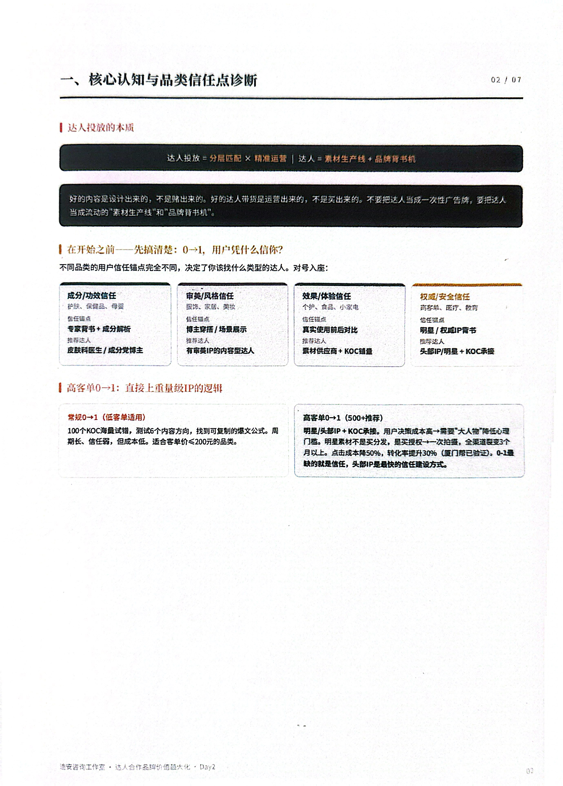
阶段一
海量试错型，以初级达人、素人/KOC为主，建议投放100个达人，测试至少6个内容方向。
密切关注笔记互动率和评论反馈，找到转化率最高的1-2个可复制内容模型。
笔记互动率 + 评论区真实反馈
⚡ 高客单/内卷品类特殊打法
先判断你的品类信任点在哪——功效型先测成分党方向，审美型先测风格场景，体验型先测前后对比，信任型直接上明星/权威IP。高客单品0-1可直接用明星/头部IP + KOC组合，不走海量试错，走精准击穿。
阶段二
在已验证的内容模型基础上规模化复制，稳定扩大A人群（高意向人群）
橄榄型（推荐）——大量腰部+初级达人为主体，少量头部拔高声量和信任度。
直接复制验证过的内容模型进行规模化铺设。自产内容0-1 + 精准头部深度合作 + N个素人/KOC/矩阵账号。
回搜率（评估种草深度）
阶段三
用头部/明星达人击穿圈层，降低全渠道获客成本
全梯队覆盖型——头部/明星 + 腰部 + 初级 + 素人全面渗透。
头部/明星素材二次创作分发，授权企业号/经销商微信信息流；定期拆解行业TOP品牌的达人矩阵和爆款内容。
笔记点击成本 + 全盘转化率
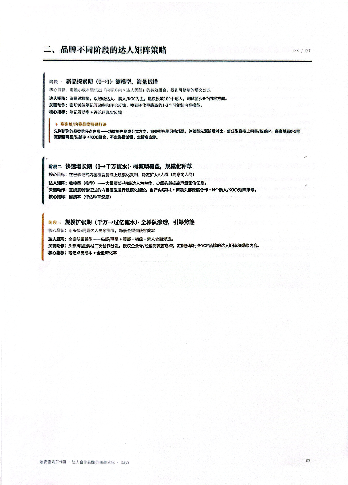
其中素材供应商达人是合作主力（占90%），核心是明确素材授权和二次利用。
| Name | Tag | Role | Detail |
|---|---|---|---|
内容型 | 稀缺 · 高成本 | 内容天花板 | 创意质量高，能产出爆款模板。需深度沟通、尊重创意，守住品牌“讲品底线”。 |
素材供应商 | 占90% · 主力 | 生产力担当 | 批量标准化素材，性价比最高。明确素材授权+二次剪辑权。分纯代发和部分提供素材两种。 |
直播型 | 即时转化 | 即时转化场 | 短视频+直播联动收割。重点关注日常GMV和互动率。适合有现货、追求快周转。 |
背书型 | 明星/专家/头部IP | 品牌信任状 | 解决用户信任难题。适合高客单价、强功效品。素材需最大化利用，全渠道分发。 |
带货型 | 垂直场景 | 场景种草机 | 在垂直场景无缝植入产品。关注历史带货品类匹配度，内容“真实有用”。 |
| Name | Content |
|---|---|
纯代发（山东系/河南系打法） | 批量代发品牌内容，实现广覆盖。品牌方提供全部内容，达人只做分发。适合品牌已有大量确定性素材需要铺量的阶段。 |
达人部分提供素材 | 账号粉丝属性明确，可批量生产素材。特点：人脸最大化，素材可二次剪辑为混剪内容（前3-10s换脸、模特换场景+产品画面），灵活用于企业号或信息流投放。 |
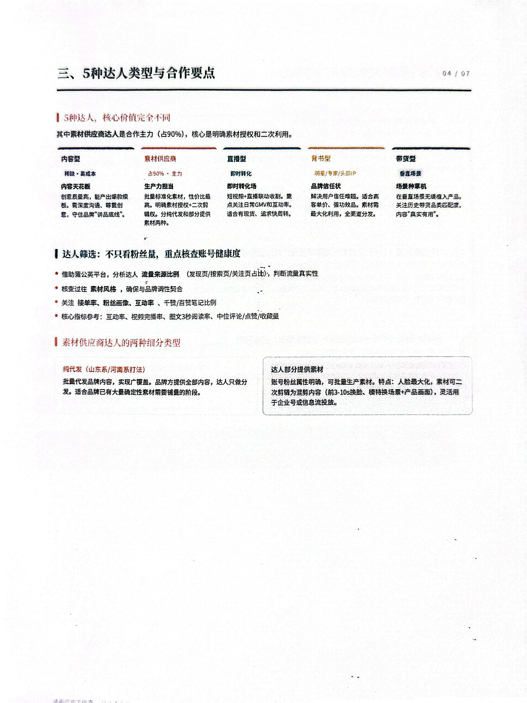
| Num | Title | Detail |
|---|---|---|
01 | 产品核心卖点 | 目标用户、内容禁忌点 |
02 | 必须展示元素 | 封面/标题设计要求 |
03 | 素材授权范围 | 是否可二创、全渠道分发（核心重点） |
04 | 审稿+修改次数 | 品牌方保留定稿权 |
05 | 合作时间节点 | 样品→大纲→发布 |
06 | 结算+服务费 | 合作金额、平台费 |
07 | 笔记组件配置 | 正文/互动/评论/底栏 |
08 | 笔记保护期 | 365天内不可随意删除 |
| Step | Title | Detail |
|---|---|---|
| 1 | 合作前明确所有需求 | 尤其是素材授权、内容修改、发布时间等细节。不留模糊地带。 |
| 2 | 先提交大纲/脚本审核，再创作 | 达人收到样品后，先提交大纲/脚本给品牌PR审核，通过后再进行内容创作。避免返工。 |
| 3 | 品牌方保留封面/标题的最终定稿权和后期修改权 | 这直接影响后续投流效果。封面和标题是决定点击率的核心要素，必须由品牌方把关。 |
| 4 | 上架后及时跟踪数据 | 关注小红星、回搜率、互动率等，实时评估合作效果，及时优化。 |
Brief不是“走个流程”，是品牌方和达人之间的契约。90%的合作翻车，不是达人能力问题，是Brief没写清楚。素材授权范围+封面定稿权+笔记保护期——这三条是底线。
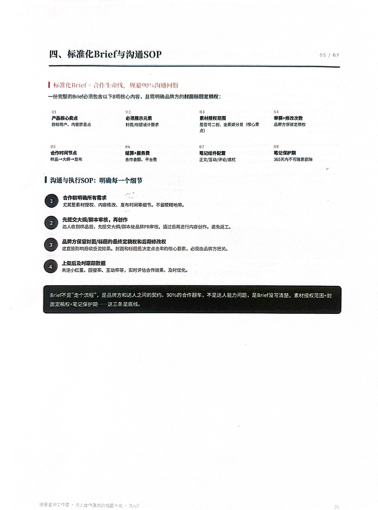
| Code | Name | Detail |
|---|---|---|
策略一 | 热门母版+新词替换 | 品牌内部输出已验证的爆款内容母版，让达人在确定性框架内二次创作。基于母版换词/换封面/改标题，结合实时热点替换关键词、场景词——“旧瓶装新酒”，持续产出爆款。核心：打造确定性高的热门内容，降低试错成本。 |
策略二 | 素材二次利用 → 价值最大化 | 将达人产出的优质素材（尤其人脸出镜部分）进行二次剪辑、混剪。剪辑后的素材可作为：企业号日常内容、信息流广告素材、直播间贴片等，全渠道复用。核心：把达人当成流动的“素材生产线”。 |
策略三 | 达人内容 + 自产内容，优势互补 | 达人内容：借助粉丝影响力、创意能力和场景种草能力，实现品牌曝光和精准触达。 自产内容：更好地控制品牌调性和成本，持续输出核心诉求。两者搭配形成品牌内容矩阵。 |
策略四 | 数据驱动复盘 | 按阶段定核心指标：探索期→互动率，增长期→回搜率，扩张期→点击成本。
每周/月拆解竞品TOP品牌：他们合作了哪些达人？内容卖点/标题/封面是什么？哪些策略可以借鉴？
借助蒲公英平台数据优化选人和内容。 |
| Stage | Price Under 100 | Price 100 To 500 | Price Over 500 |
|---|---|---|---|
0→1 探索期 | KOC海量试错 测内容模型 | KOC+少量腰部 测信任锚点 | 明星/IP+KOC 直接拉信任 |
1→千万 增长期 | 素材供应商铺量 +投流放大 | 橄榄型矩阵 腰部+初级为主 | 金字塔型 头部定调+腰部承接 |
千万→亿 扩张期 | 全梯队铺量 +信息流裂变 | 全梯队渗透 +明星素材二创 | 全梯队+明星核武器 击穿圈层降本 |
记住：高客单500+品类，0-1就可以直接上明星/IP——这不是奢侈，是最高效的信任建设方式
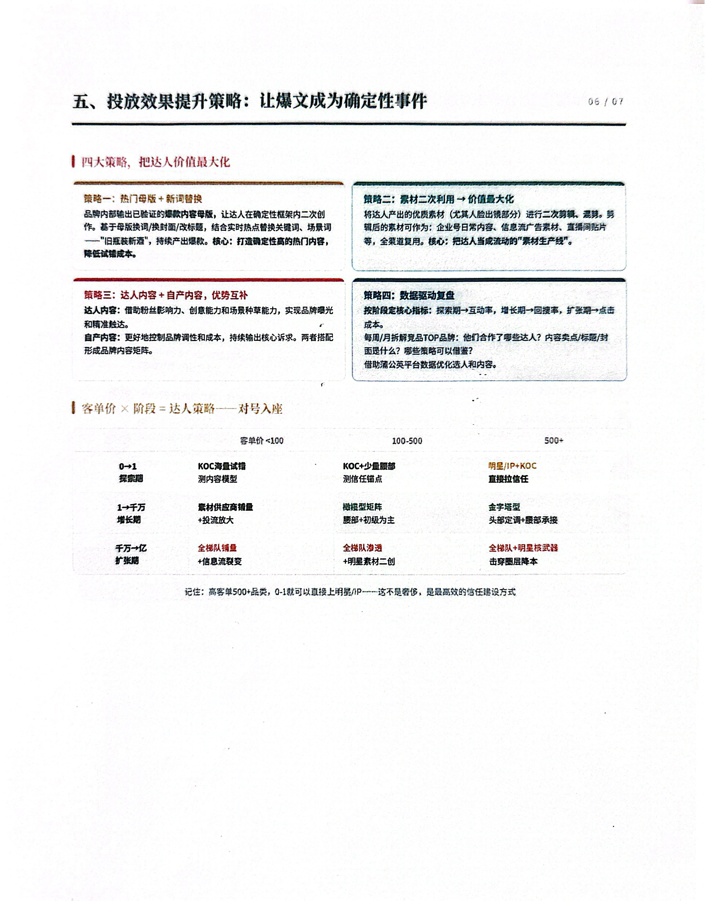
| Num | Title | Content |
|---|---|---|
01 | 先判断品类信任锚点，再选达人类型 | 成分/功效信任→专家背书，审美信任→内容IP，体验信任→KOC铺量，权威信任→明星/头部IP。选错达人类型=白花钱。 |
02 | 高客单0→1可直接上明星/IP拉信任，不走弯路 | 客单价500+品类，用户决策成本高，0-1阶段最缺信任。明星素材买的是授权不是分发——一次拍摄，全渠道裂变3个月。点击成本降50%，转化率提升30%。 |
03 | 90%的达人是素材供应商，核心是素材授权和二次利用 | 不要期待每个达人都能自产爆款，90%的达人本质是帮你批量生产标准化素材。合作前必须明确素材授权范围、二次剪辑权。素材二次利用=全渠道复用=价值最大化。 |
04 | Brief是合作生命线，封面标题定稿权必须拿到手 | 90%的合作翻车源于Brief不清晰。素材授权范围+封面定稿权+笔记保护期——这三条是底线，缺一不可。 |
05 | 爆文靠设计不靠赌——热门母版+新词替换=确定性 | 品牌输出已验证的爆款母版，达人在框架内二次创作。换词/换封面/改标题=旧瓶装新酒，持续产出爆款。好的达人带货是运营出来的，不是买出来的。 |
达人不是广告牌，是素材生产线和品牌背书机
找到信任锚点，匹配对的达人，设计确定性内容，复用每一份素材——这就是达人合作的全部。
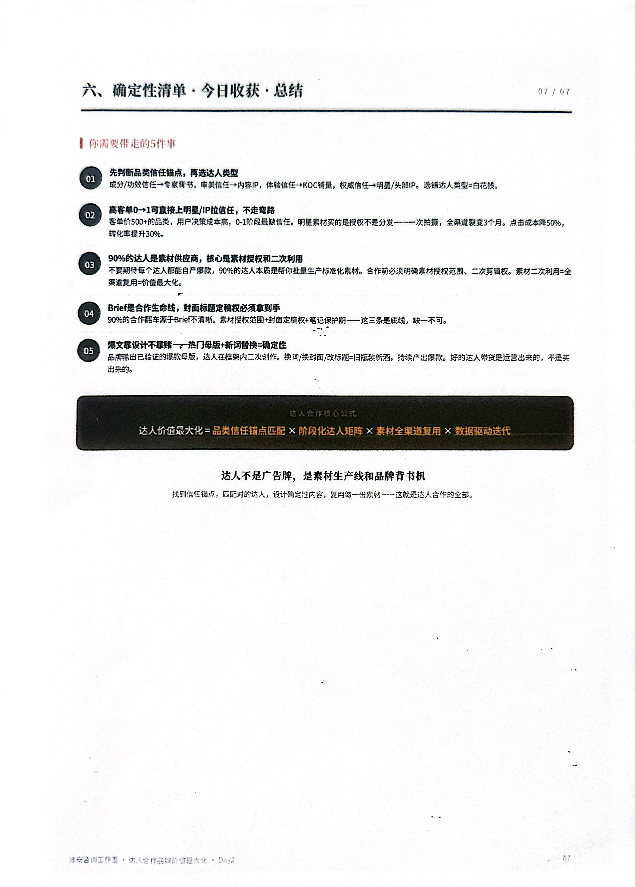
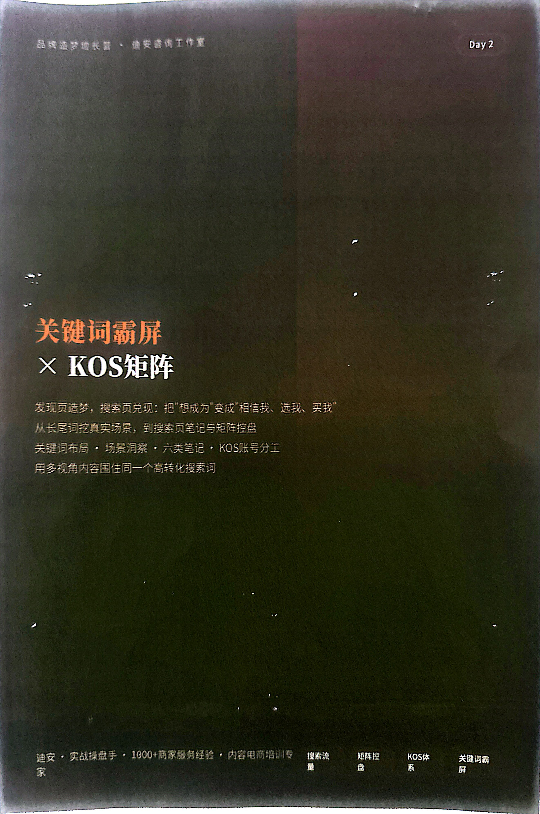
| Q | Desc |
|---|---|
Q1 种草了不转化 | 发现页心智种下了，却断在决策前——用户信了但没地方兑现信任 |
Q2 达人合作不可控 | 报价高涨，转化效果不可控，链路易断裂 |
Q3 内容不知道怎么做 | 账号定位模糊，内容同质化严重，缺乏方向 |
Q4 无法规模化复制 | 缺乏工业化内容生产体系，依赖个人能力 |
| Dimension | Discovery Page | Search Page |
|---|---|---|
核心角色 | 兴趣驱动 · 算法推荐 | 需求驱动 · 主动寻找 |
用户动机 | 无目的闲逛，激发潜在兴趣 | 带着明确问题/意图，寻找解决方案 |
流量性质 | 脉冲型流量，生命周期短（3-7天） | 长尾复利流量，生命周期长（数月甚至半年） |
内容逻辑 | 制造向往、激发情绪、造梦感 | 解答疑虑、提供证据、横向对比、促决策 |
转化效率 | 种草率高，直接成交转化率低 | 决策链路短，直接转化率与客单价高 |
竞争成本 | 竞价激烈，依赖预算与爆款运气 | 长尾词竞争小，靠布局与矩阵即可霸屏 |
心智转化（主角色）：承接发现页种下的心智，在用户搜索时提供最强信任背书与成交理由
直接拦截（次角色）：精准拦截竞品搜索词与品类词，直接截流高意向买家
顺带红利：搜索优质内容自然进入发现页获得二次曝光与长尾流量
迪安咨询搜索数据验证：搜索支付金额 ¥260,222（+67%）· 搜索支付占比 13.43%（+2.46%）· 搜索页笔记89%流量来自搜索 · 200小眼睛就有转化（正价5k+产品）
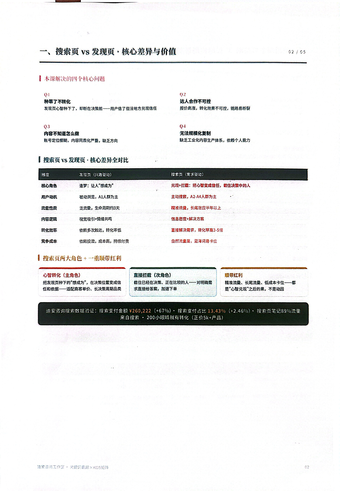
| Type | Desc |
|---|---|
核心词 | 行业/品类主题词，如“粉底液”、“猫粮”，搜索量大但竞争极高，适合头部品牌心智占位 |
长尾词 | 核心词+细分场景/人群/痛点，如“油痘肌粉底液不闷痘”，搜索精准、意图明确、转化率极高 |
蓝海词 | 搜索量快速上升但笔记供给不足的高潜力词，具备极强性价比与霸屏机会 |
| Name | Tag | Desc |
|---|---|---|
搜索页下拉 | 免费 | 最实时、最真实的用户联想搜索词 |
聚光 · 关键词规划 | 王炸组合 | 搜索量指数、竞价成本、竞争激烈程度全数据 |
Ark后台 | 品牌专属 | 看店铺搜索来源词与成交转化词 |
千瓜/5118 | 第三方 | 大盘趋势词、蓝海词挖掘与竞品监控 |
| Signal Type | Expressions | Meaning |
|---|---|---|
人群信号 | 学生党 / 孕妇 / 敏皮 / 大码 / 新手 | 明确限定了身份、身体特征或经验门槛，需要强针对性身份认同 |
场景信号 | 通勤 / 熬夜 / 送礼 / 约会 / 出差 | 置于具体时空条件中，追求特定情境下的适配度与即时表现 |
痛点信号 | 卡粉 / 烂脸 / 掉毛 / 显胖 / 假白 | 有明确的顾虑、担忧或踩坑恐惧，需要避坑保证与安全感 |
决策信号 | 性价比 / 测评 / 真实评价 / 平替 / 红黑榜 | 处于临门一脚决策期，需要横向对比与客观证据支撑选购 |
这个人不是在找“品类”，他是在一个具体处境里，因为某种焦虑或阻力，想找到一种更确定、更省心、更安全、更体面的办法。
| Search Term | Person And Scenario | Fear Emotion | Note Hit Angle | Product Selling Point |
|---|---|---|---|---|
油痘肌粉底液不闷痘 | 20-25岁年轻女生，日常上班/上课带妆时间长，容易出油长痘 | 怕遮瑕厚重闷出闭口，怕下午脱妆斑驳显脏，怕同事/同学近看 | 持妆8小时带妆测评 / 油痘肌空瓶记 / 显微镜级毛孔测评 | 透气控油配方、养肤级成分、轻薄高遮瑕 |
幼猫猫粮性价比高 | 新手养猫打工人群体，刚接猫回家，预算有限但怕把小猫喂生病 | 怕软便生病去医院看病贵，怕假洋牌毒猫粮，怕营养不够影响发育 | 新手养猫红黑榜 / 成分党拆解平价粮 / 0差评自用清单 | 高鲜肉配方、益生菌护肠胃、透明溯源、实惠大包 |
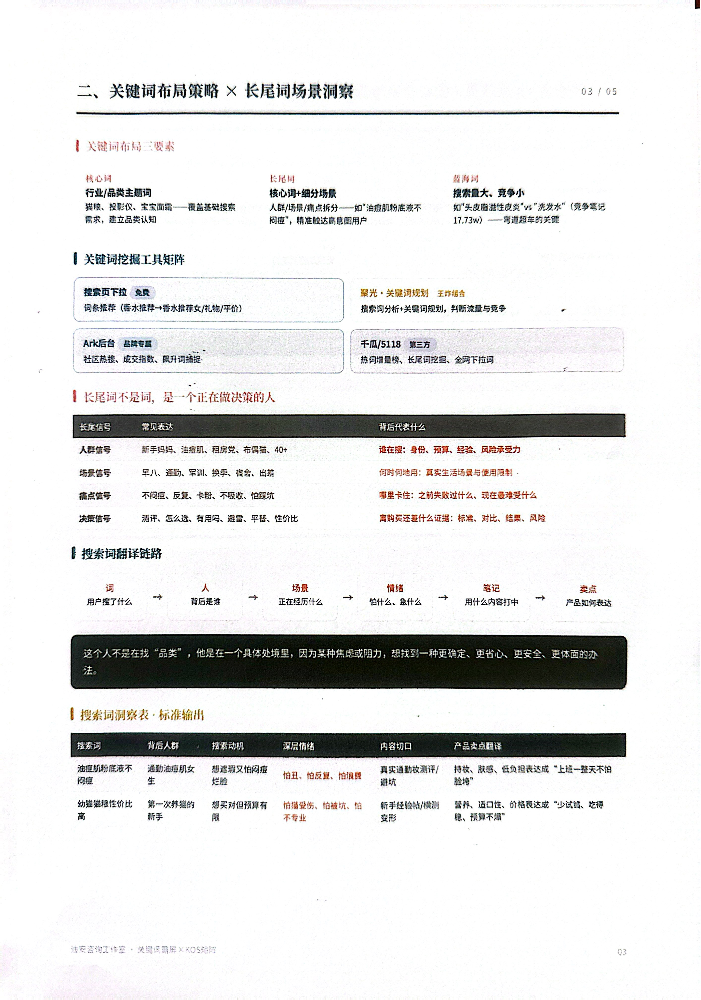
| Type | Purpose |
|---|---|
用户视角笔记 | 真实生活分享，用真诚消除营销防备心，建立第一层共鸣 |
测评笔记 | 深度多维度拆解与实测，用数据与细节证明硬实力 |
效果型笔记 | 直观前后对比（Before/After），直击痛点解决效果 |
经验帖笔记 | 干货教程与方法论总结，输出专业价值并自然植入产品 |
反向案例笔记 | 避坑指南与反向预警，先说不该怎么做再给出正确解法 |
横测变形笔记 | 多品横向多维对比，抢占品类比较第一心智 |
| Transformation | Example |
|---|---|
按人群变形 | 油皮 vs 干皮 · 学生党 vs 上班族 · 孕妈 vs 普通人 |
按场景变形 | 通勤日持妆 vs 约会出油暴汗 vs 熬夜通宵急救 |
按预算变形 | 百元平替 vs 千元大牌 vs 极致性价比之选 |
按错误变形 | 常见5大误区对比 · 这样选等于白花钱 |
按决策顺序变形 | 初筛排除法 → 深度横评 → 终极推荐选购 |
| Emotion | Note Type | Angle |
|---|---|---|
怕广告、不相信商家说法 | 用户视角笔记 / 真实打卡记 | 素人自购、真实空瓶记录、无美颜原图展示 |
怕买错、不会判断 | 经验帖 / 保姆级选购指南 | 三步看懂参数、防踩坑口诀、手把手教选 |
怕没用、怕坚持不了 | 效果型笔记 / 周期性打卡 | 连续使用7天/28天真实变化过程记录 |
怕踩坑、怕浪费钱 | 横测变形笔记 / 红黑榜 | 多品牌横测，客观打分，好坏直说 |
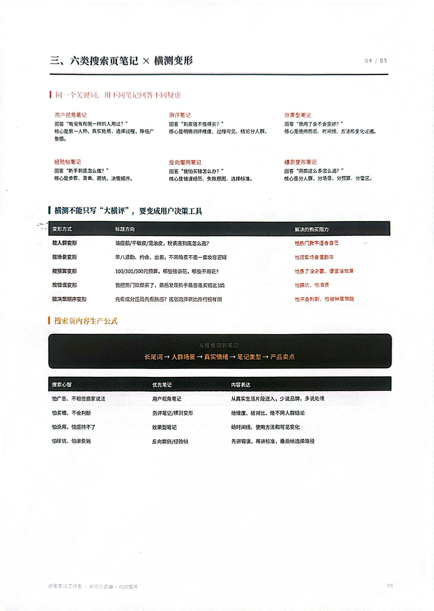
| Stage | Title | Features |
|---|---|---|
初级段位 · 超越60% | 单账号 × n 简单复制 | 多个同质化账号铺量发同样内容，容易被系统判定重复限流，生命周期短 |
中级段位 · 超越90% | 企业号 + 垂类号 × n | 分工明确，主号背书，垂类号切入细分人群与痛点，初步形成合力 |
高级段位 · 超越99% | 多人设多类型账号闭环矩阵 | 官方背书 + 专家导师 + 柜姐/店员 + 真实用户素人，多视角垄断搜索页 |
企业号+主理人号（1-2个）：品牌心智背书、正品保障、价值观与专业形象输出
垂类KOS子号（5-10个）：按人群/品类/场景拆分独立人设，高频生产垂直内容
辅助账号（n个）：真实感素人测评、问答跟帖、自购分享、拦截补位
干货教程 40% · 种草测评 30% · 人设故事 20% · 问答补位 10%
W1 关键词库建立与KOS矩阵开通：搭建核心词+长尾词库500+，完成账号注册、人设定位与基础主页装修
W2 内容模板工业化生产与数据复盘：按六类笔记模板批量产出首批内容，监测收录与排名，针对薄弱词补位
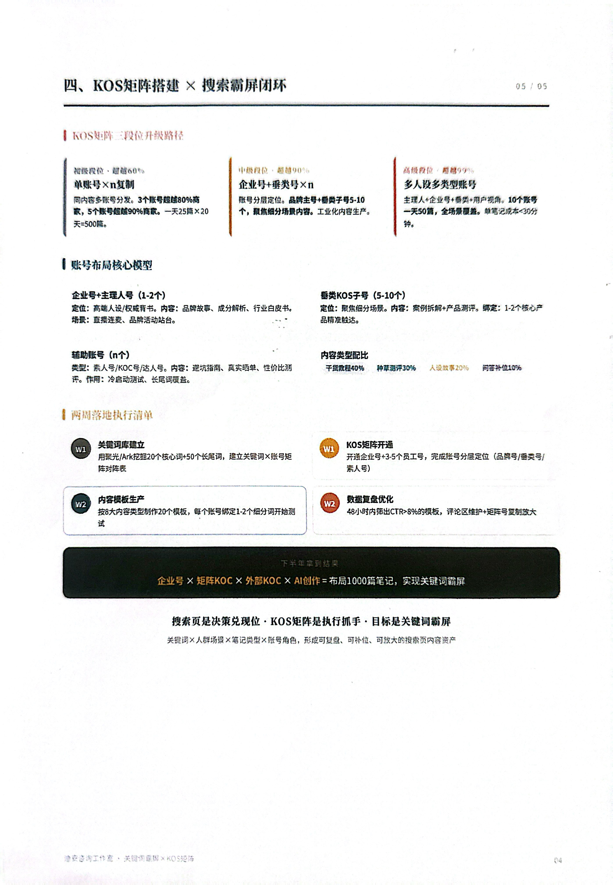
| Type | Purpose |
|---|---|
用户视角笔记 | 真实生活分享，用真诚消除营销防备心，建立第一层共鸣 |
测评笔记 | 深度多维度拆解与实测，用数据与细节证明硬实力 |
效果型笔记 | 直观前后对比（Before/After），直击痛点解决效果 |
经验帖笔记 | 干货教程与方法论总结，输出专业价值并自然植入产品 |
反向案例笔记 | 避坑指南与反向预警，先说不该怎么做再给出正确解法 |
横测变形笔记 | 多品横向多维对比，抢占品类比较第一心智 |
| Transformation | Example |
|---|---|
按人群变形 | 油皮 vs 干皮 · 学生党 vs 上班族 · 孕妈 vs 普通人 |
按场景变形 | 通勤日持妆 vs 约会出油暴汗 vs 熬夜通宵急救 |
按预算变形 | 百元平替 vs 千元大牌 vs 极致性价比之选 |
按错误变形 | 常见5大误区对比 · 这样选等于白花钱 |
按决策顺序变形 | 初筛排除法 → 深度横评 → 终极推荐选购 |
| Emotion | Note Type | Angle |
|---|---|---|
怕广告、不相信商家说法 | 用户视角笔记 / 真实打卡记 | 素人自购、真实空瓶记录、无美颜原图展示 |
怕买错、不会判断 | 经验帖 / 保姆级选购指南 | 三步看懂参数、防踩坑口诀、手把手教选 |
怕没用、怕坚持不了 | 效果型笔记 / 周期性打卡 | 连续使用7天/28天真实变化过程记录 |
怕踩坑、怕浪费钱 | 横测变形笔记 / 红黑榜 | 多品牌横测，客观打分，好坏直说 |
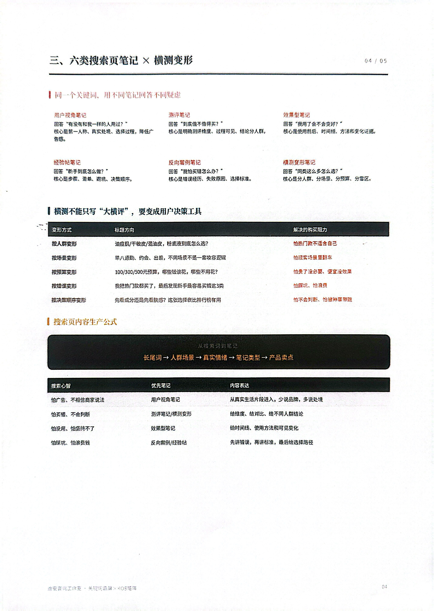
AI时代 电商团队建设
定岗 · 选人 · 激励 与人机协作
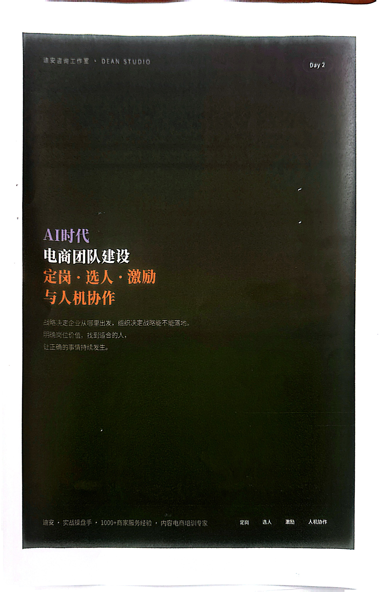
开场 | 战略对了，为什么团队还做不出结果？
先看组织逻辑，再判断员工表现
业务做不起来，先检查：岗位是否清楚、人岗是否匹配、指标是否对应价值、协同有没有接口。AI上线以后，这些责任也需要重新分配。
| Step | Question |
|---|---|
01定岗 | 这个岗位究竟应该为什么结果负责？ |
02选人 | 什么样的人适合这个岗位？ |
03激励 | 怎样让正确动作持续发生？ |
04升级 | AI参与执行以后人还要负责什么？ |
| Trap | Description |
|---|---|
只看履历 | 听到“操盘过大GMV”就高薪录用，却没追问个人判断、动作和资源条件。 |
职责混用 | 让研发岗追产量，让复制岗天天创新，最后两边都做不好。 |
各管一段 | 内容交稿、BD寄样、投手消耗都完成，却没人对最终业务结果负责。 |
指标错位 | 只奖励发了多少篇、联系多少达人，没有质量、资产和协同要求。 |
工具先行 | 先堆AI工具，却没有输入标准、验收规则和异常负责人。 |
团队管理，是把适合的人放在清晰的岗位上，用目标、协同和反馈，让正确的事情持续发生。
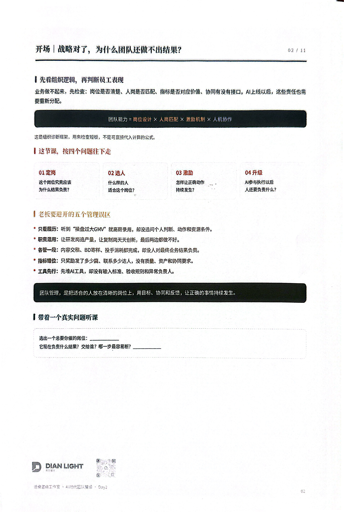
定岗 | 按价值创造分工，五类岗位各自负责什么
每个岗位，都讲清楚五件事
| Role | Mission | Core Results And Process | Assets And Interfaces |
|---|---|---|---|
内容研发 | 寻找新的确定性 | Result 验证新的人群×场景、有效模板 Process 提出假设、测试、解释成败 | Assets 母版、有效元素、适用边界 Interfaces 交给复制岗，并接收投流反馈 |
内容复制 | 稳定放大确定性 | Result 有效内容量、稳定出单 Process 围绕身份、封面、标题、账号微裂变 | Assets 版本记录、质量清单 Interfaces 接收研发母版，异常退回研发 |
BD / PR | 从外部组织内容资产 | Result 有效达人内容、可复用素材 Process 筛选、brief、交付与授权验收 | Assets 达人库、素材库、新内容框架 Interfaces 供内容与投流复用，回收效果数据 |
投流 | 识别并放大确定性 | Result 目标回报约束下的有效放量 Process 测试素材×人群，解释差异 | Assets 素材表现、投放条件、放量规则 Interfaces 反哺内容与BD，联动店铺承接 |
内容业务负责人 | 让各岗位形成闭环 | Result 项目结果、协同效率、方法沉淀 Process 拆目标、配资源、处理偏差 | Assets 看板、决策记录、团队SOP Interfaces 承接老板战略，对最终业务结果负责 |
研发岗负责找到正确的路，复制岗负责把正确的路走宽。内容岗在内部生产内容，BD在外部组织内容，投流识别并放大确定性。
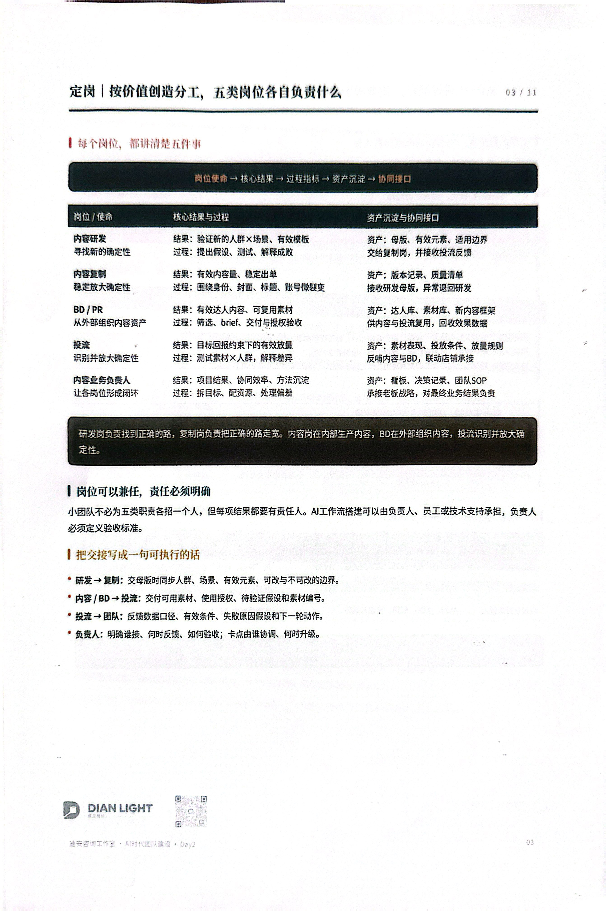
沿用阶段配置，先看验证程度再看人数
配置的依据是业务阶段、任务量和协同复杂度。下面是组织设计示例，不是按GMV自动套用的编制表。
| Stage | Key Focus | Role Config | Stage Output | Hiring Basis |
|---|---|---|---|---|
0→1 验证内容模型，跑通业务链路 | 先有人判断方向，也有人把验证推进到底 | 负责人（老板/合伙人可兼任）+内容研发+测试执行与数据反馈；AI辅助研究、草稿和数据整理。 | 明确目标人群与场景，拿到有效模板证据，记录成立条件。 | 卡在方向就补研发与判断，卡在执行就补稳定交付能力；外部内容重要时安排BD责任。 |
1→10 把验证过的模式稳定放大 | 研发与复制分工，新增内容与素材来源 | 负责人统筹研发、复制、投流与BD/PR；分工随素材盘、预算和反馈负荷细化。 | 模板复用、可用素材库、每周内容—投流复盘机制。 | 看有效产出、返工和交付延迟；AI流程稳定后，再判断剩余工作量需要多少人。 |
规模化 标准化复制，降低对个人经验的依赖 | 分清业务决策、团队管理与流程维护 | 内容业务负责人+各职能负责人+执行团队；根据复杂度安排AI流程支持。 | 跨项目复用的SOP、知识库、质量抽查和异常处理机制。 | 当协同跨度和管理负荷持续超出承载，再配置中层；不为层级本身增岗。 |
| Role | Priorities | Common Mismatch |
|---|---|---|
内容研发 | 好奇心、用户敏感、能承受失败、会归纳 | 把“靠谱、稳定”直接等同于开创新项目能力 |
内容复制 | 执行稳定、细节意识、遵守标准、耐心 | 要求所有复制人员都不断创新 |
内容业务负责人 | 判断、拆解、统筹、复盘与闭环 | 把最会写内容的人直接提拔为负责人 |
责任心强、做事靠谱，不自动等于适合研发或带团队。先把岗位价值定义清楚，再判断一个人是否适合。
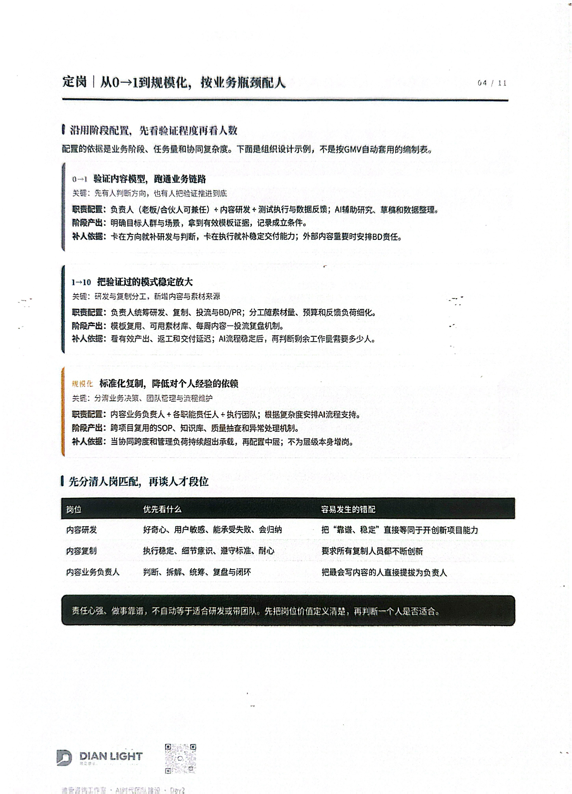
选人 | AI时代内容业务负责人的5个能力
岗位定义：接住老板的战略，把内容业务持续跑出结果
把“操盘手”定义为AI时代的内容业务负责人。专业经验仍然重要，负责人还要把业务问题变成团队行动，对优先级、资源配置、关键判断和最终结果负责。
负责人不是团队里最会写内容的人，而是最会判断“接下来团队应该做什么”的人。
| Competency | Observable Actions | Deficiency Signs |
|---|---|---|
① 业务判断 | 识别当前最重要的问题；判断什么值得做、什么应该停，说明依据与取舍。 | 什么都想做，老板说什么就执行什么。 |
② 数据分析 | 从异常出发，提出假设、核查原因，把分析变成下一轮动作。 | 只报数字，不解释变化，也提不出验证办法。 |
③ 项目统筹闭环 | 把目标拆成人、事、时间和节点；主动协调资源，推进、验收、复盘。 | 等人、等反馈、等老板催；做了很多却没有结果。 |
④ 结构化学习 | 快速理解新行业、平台和方法；建立假设，小规模验证后迁移到业务。 | 只会过去做过的事情，换品类就失去判断。 |
⑤ 团队与AI调度 | 分清自己、员工和AI各自承担什么；建立SOP、质量标准与复盘机制。 | 自己很能干，团队离开他就不转；AI只用于写文案。 |
小红书从业年限、品类经验和GMV履历可以加分；还要追问结果归因，以及换一个品类、团队或业务问题后，能力能否迁移。
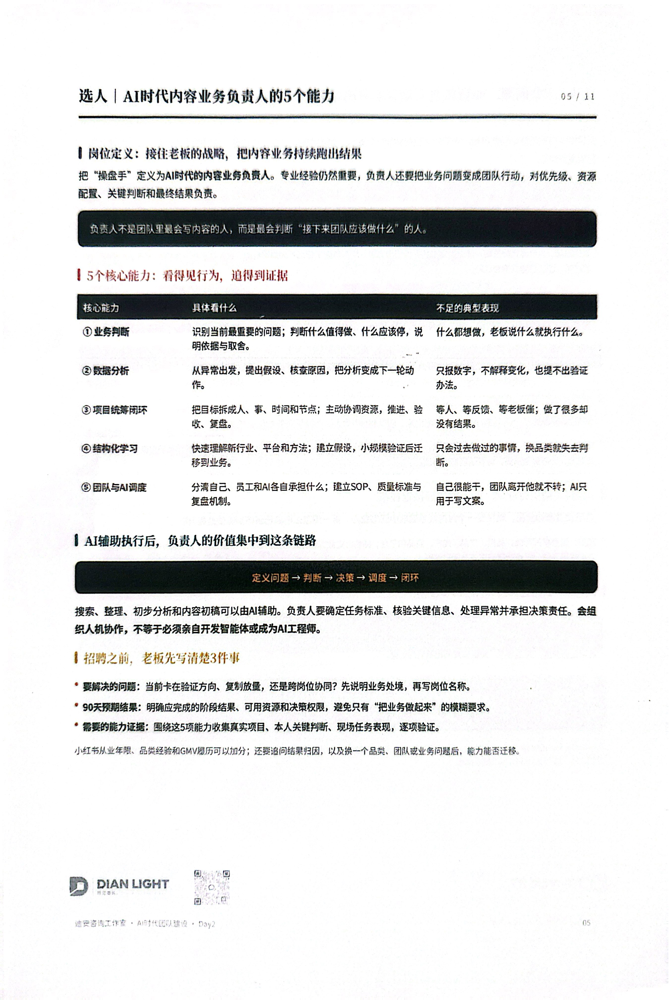
选人 | 5个问题，验证负责人是否能带出结果
用真实业务问题验证判断过程。请候选人说明需要什么信息、如何判断、做出什么取舍、怎样推进和验收。以下数字均为面试假设情境。
| Question Number | Title | Prompt | Observation |
|---|---|---|---|
问题1 | 过去高结果，究竟有多少来自他的判断？ | “讲一个你从头到尾负责的项目：最初目标是什么？做了哪3个关键判断？本人负责什么？最终数据如何？重做会改什么？” | 追问归因：为什么这样判断？什么数据支持？谁提出方案？你具体做了什么？如果没有你，这件事还会发生吗？分清个人贡献、老板决策、团队资源与平台红利。 |
问题2 | 先定义问题，再给方案 | “首月发了100篇小红书笔记，第二个月曝光下降30%、GMV下降20%。团队说平台流量不好，你接下来怎么判断？” | 观察：是否先索取信息：发文量、下滑时间、内容类型与模板；搜索/发现渠道；曝光→点击→进店→转化漏斗；投放变化、商品价格与供给、竞品同期表现。能否据此提出假设并设计验证，而非直接说“优化标题、多发内容”。 |
问题3 | 把模糊目标拆成可推进的项目 | “未来30天要把某个新品的小红书业务跑出来，团队给你4个人，你从明天开始怎么推进？” | 观察：是否先澄清“跑出来”的结果口径，再拆目标、指标、测试矩阵、人员分工与节点；安排每日看板和每周复盘；说清何时停止方向、何时复制放量，遇到阻塞如何协调。 |
问题4 | 陌生行业里，能不能快速接近答案？ | “你没做过宠物食品，现在要一个月内接手这项小红书业务。第一周怎么把自己训练到能做业务判断？” | 观察：是否串起行业、品类、产品、用户、竞品和平台；结合历史数据、评论与搜索需求、内部访谈，用AI辅助研究，形成假设并做小规模测试。重点听学习方法与验证路径。 |
问题5 | 如何把员工和AI组织成结果？ | “给你4个员工+ChatGPT/Claude+公司完整知识库和过去6个月数据，你会怎么重新设计内容团队？” | 观察：AI承担监控、初筛、聚类与初稿；员工承担用户验证、创意选择与协同；负责人抓目标、优先级、资源、异常和最终决策。追问任务交接、人工验收、质量标准与出错后的处理。 |
招聘依据：过去证据+现场任务+试岗表现。执行岗看“会不会做”；负责人看“能不能判断、拆解，并让团队把事情做成”。
各职能岗位的现场任务可按职责设计：研发岗拆爆款并提出测试假设；复制岗按SOP完成内容；BD岗匹配达人并拟合作方案；投流岗诊断素材与投放数据。提前约定试岗任务和验收标准。
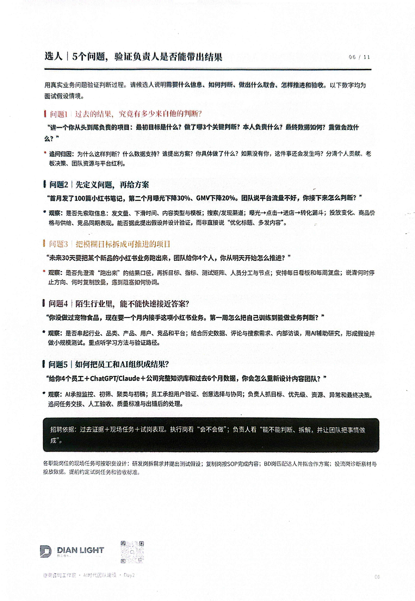
激励 | 绩效看四层，研发与复制分别设计
结果、过程、资产、协同：四层都要看
| Layer | Core Question | Content Business Example |
|---|---|---|
结果指标 | 最终创造了什么价值？ | 有效模板、业务转化、目标回报下的放量 |
过程指标 | 正确动作有没有持续发生？ | 有假设的测试、有效内容交付、及时反馈 |
资产指标 | 有没有留下可复用能力？ | 母版、素材库、失败边界、SOP |
协同指标 | 有没有推动整体结果？ | 交接验收、问题闭环、跨岗位反馈落实 |
| Dimension | Rd Role | Replication Role |
|---|---|---|
内容质量 | 验证新方向是否有效，能解释结果 | 在已验证条件下保持质量和效果稳定 |
素材产能 | 有假设、有记录的有效测试量 | 按标准验收有效内容量与准时交付 |
质量约束 | 提供可用母版、素材来源和审核清单 | 按清单审核，跟踪返工率与重复错误 |
模板与资产 | 新模板、用户洞察、适用边界 | 模板复用效果、版本记录、异常反馈 |
CTR、互动率、出单数、过审率都要明确分母、周期、流量来源与测试条件，阈值和权重根据本业务基线设定，不把单一数字当作所有品类的通用标准。
只看结果容易追短期，只看过程容易用忙碌掩盖无效。新模板是团队资产，奖励要连接“验证有效”和“后续复用”。
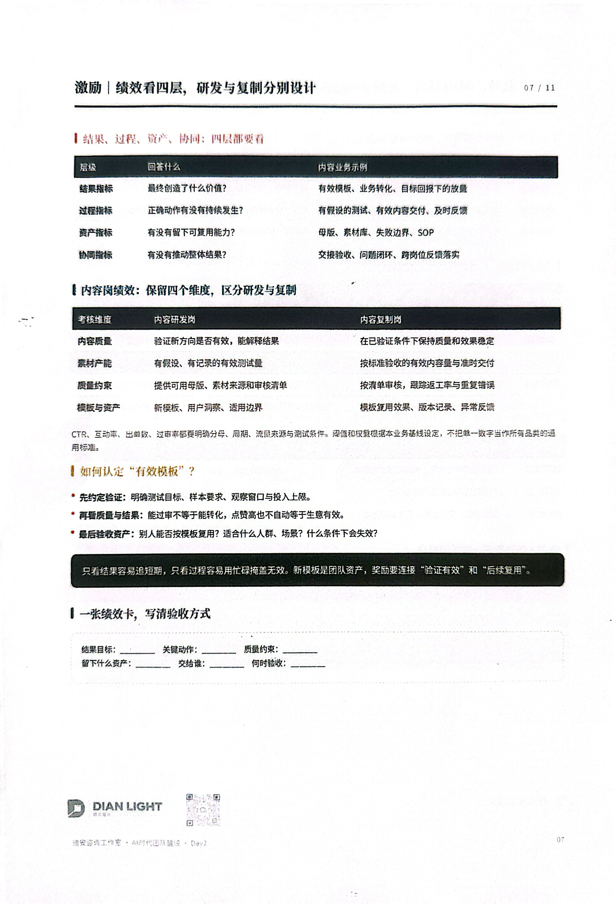
激励 | 投流、BD与运营，把指标接成业务闭环
| Role Name | Role Summary | Table | |||||||||||||||
|---|---|---|---|---|---|---|---|---|---|---|---|---|---|---|---|---|---|
投流岗 | 识别高潜素材，反馈放量条件 |
| |||||||||||||||
BD / PR岗 | 从外部组织内容和素材资产 |
| |||||||||||||||
店铺运营 / 直播承接 | 接住内容带来的需求 |
|
当每个岗位都知道自己的产出会影响下一岗，团队才会从“完成自己的任务”，走向共同完成业务闭环。共同目标、清晰接口、及时反馈，要落实到同一张看板。
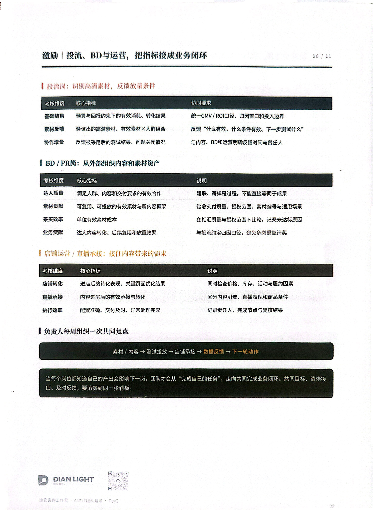
激励 | 把绩效运营起来，让正确行为及时被看见
五层机制，解决不同的问题
| Mechanism | Function | Boundary |
|---|---|---|
基础工资 | 对应岗位职责与稳定交付 | 先明确岗位期待 |
绩效工资 | 对应基本目标与质量要求 | 按事先约定的口径验收 |
超额奖励 | 鼓励增量结果、有效创新 | 明确基线、成本和归因，避免重复计奖 |
过程激励 | 缩短努力与反馈之间的距离 | 及时认可可验证的小成果 |
晋升成长 | 让能力提升对应更大责任和机会 | 看持续证据、带教与方法沉淀 |
| Milestone | Evidence | Feedback |
|---|---|---|
新模板首次通过约定验证 | 测试记录、结果口径、适用条件 | 认可发现者，并记录协作者贡献 |
复制岗完成有效复用 | 同条件下的内容结果与质量验收 | 分享成功动作，更新复制清单 |
跨岗解决一个关键卡点 | 问题、责任分工、改善前后证据 | 共同认可，讲清协作如何创造价值 |
经验变成团队可用方法 | SOP被他人使用后验收记录 | 给出展示、带教与成长机会 |
名称、积分、奖品与预算由团队预先约定。不要只看发稿、寄样、AI调用次数；同一成果的个人贡献与协同贡献要提前说清。
过程激励的作用，是缩短努力与反馈之间的距离。合理回报、信任关系、正向反馈与成长机会，共同支撑员工持续投入。
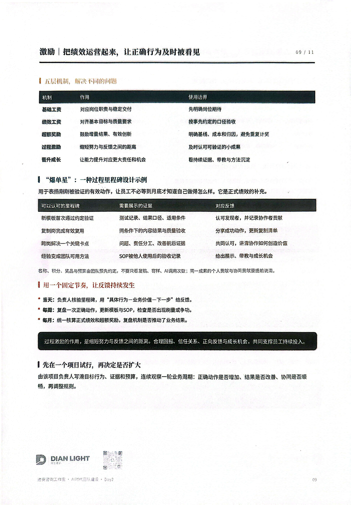
升级 | 人和AI重新分工，最终责任要有人承担
AI参与标准化执行，人定义目标、校验结果
| Stage | Ai Assistance | Human Responsibility |
|---|---|---|
研究与分析 | 信息整理、评论聚类、数据初筛、提出假设 | 定义问题、核对来源、验证洞察与因果 |
内容与复制 | 选题辅助、脚本与初稿、按模板生成候选版本 | 选择创意、审核质量、验证用户反馈 |
项目推进 | 记录、汇总、提醒、生成日报周报 | 协调资源、处理例外、作出取舍 |
知识复用 | 检索规则、调用案例、辅助运行工作流 | 维护标准、校验输出、更新失效方法 |
| Role | Description |
|---|---|
执行岗 | 把重复步骤交给AI辅助，管理输入、产出验收和异常反馈。 |
研发岗 | 用AI扩展信息和候选方案，由人选择假设、设计测试、解释结果。 |
负责人 | 设计目标、优先级、分工和决策机制，让员工与AI一起完成闭环。 |
老板 | 明确战略目标和约束，配置关键资源，检查负责人能否承担结果。 |
| Dimension | Original Process | Ai Process |
|---|---|---|
有效交付量 | 同周期通过验收内容数 | 同周期、同质量标准的有效内容数 |
总人时 | 研究+生产+审核+返工 | 流程搭建摊销+操作+审核+返工 |
总成本 | 人力+外包+相关支出 | 人力+工具/模型+维护+外包 |
业务结果 | 对应测试条件下转化表现 | 相近条件下转化表现与质量变化 |
有效人效 = 通过验收的有效产出 ÷ 总人时
将总成本与有效产出同步记录。生成草稿量不能直接等同于发布量、合格量或GMV；提效幅度以实际对照结果为准。
人负责判断与校验，AI辅助处理信息和执行，负责人把两者组织成结果。AI越能执行，人的招聘标准就越要向判断、组织和责任上移。
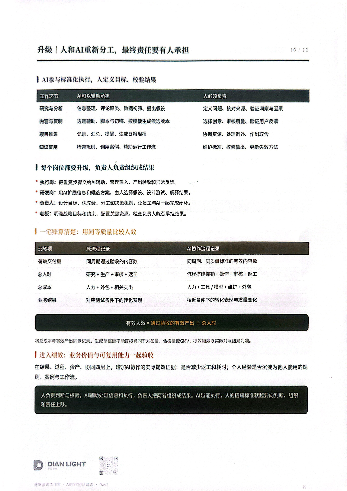
本页为装订册中的印刷重复页（同 Page 39 / slide 09/11），实体完整扫描录入保留。
激励 | 把绩效运营起来，让正确行为及时被看见
五层机制，解决不同的问题
| Mechanism | Function | Boundary |
|---|---|---|
基础工资 | 对应岗位职责与稳定交付 | 先明确岗位期待 |
绩效工资 | 对应基本目标与质量要求 | 按事先约定的口径验收 |
超额奖励 | 鼓励增量结果、有效创新 | 明确基线、成本和归因，避免重复计奖 |
过程激励 | 缩短努力与反馈之间的距离 | 及时认可可验证的小成果 |
晋升成长 | 让能力提升对应更大责任和机会 | 看持续证据、带教与方法沉淀 |
| Milestone | Evidence | Feedback |
|---|---|---|
新模板首次通过约定验证 | 测试记录、结果口径、适用条件 | 认可发现者，并记录协作者贡献 |
复制岗完成有效复用 | 同条件下的内容结果与质量验收 | 分享成功动作，更新复制清单 |
跨岗解决一个关键卡点 | 问题、责任分工、改善前后证据 | 共同认可，讲清协作如何创造价值 |
经验变成团队可用方法 | SOP被他人使用后验收记录 | 给出展示、带教与成长机会 |
名称、积分、奖品与预算由团队预先约定。不要只看发稿、寄样、AI调用次数；同一成果的个人贡献与协同贡献要提前说清。
过程激励的作用，是缩短努力与反馈之间的距离。合理回报、信任关系、正向反馈与成长机会，共同支撑员工持续投入。
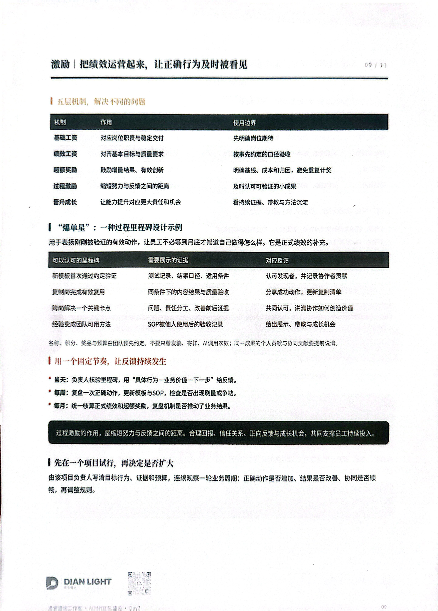
收尾 | 一个负责人到底行不行，看这5件事
能接住战略，也能让团队持续跑出结果
| Number | Test | Capability |
|---|---|---|
01 | 给他一个陌生问题 | 他能不能快速搞明白，找到接近答案的学习路径？ |
02 | 给他一堆数据 | 他能不能发现异常、定义问题，提出并验证原因假设？ |
03 | 给他一个模糊目标 | 他能不能拆成具体项目，讲清人、事、时间与验收？ |
04 | 给他一群人 | 他能不能协调资源、解决卡点，把事情推进到底？ |
05 | 给他AI | 他能不能放大自己和团队的能力，校验结果并沉淀方法？ |
执行岗看“会不会做”；负责人看“能不能判断、拆解，并让别人把事情做成”。从业年限和过往GMV可以加分，最终要回到可验证的能力证据。
AI时代的电商团队建设
老板不在场，团队也知道下一步做什么。
知道目标是什么、事情由谁推进、结果如何验收、方法如何改进，才是一支能够持续成长的团队。
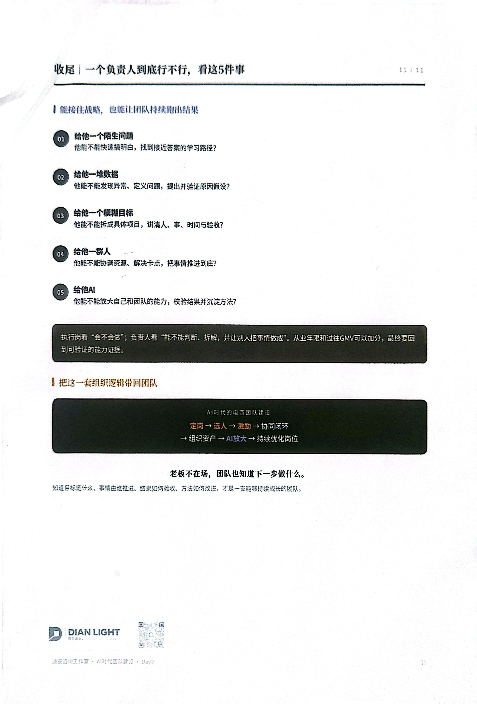
请输入关键词开始检索...